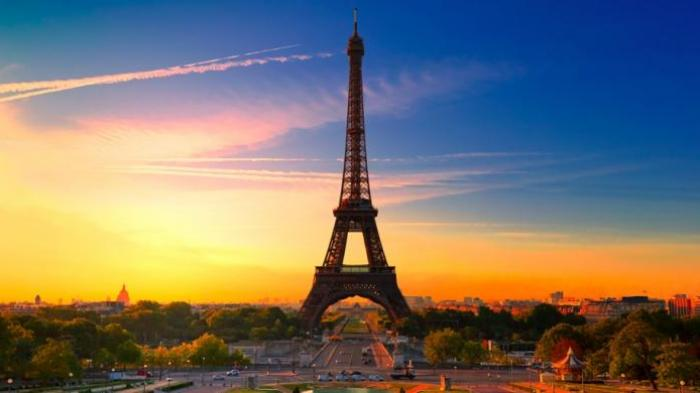

Menara Eifel
Menara Eiffel yang terletak di Paris, Perancis, telah lama menjadi destinasi populer dunia. Terletak di tepi Sungai Seine, Menara Eiffel menjadi ikon global Perancis dan landmark Kota Paris. Melansir dari toureiffel.paris, Menara Eiffel setiap tahunnya dikunjungi lebih dari 7 juta wisatawan, di mana 75 persen di antaranya merupakan turis asing..
Kepopuleran Menara Eiffel yang telah mendunia membuat landmark ini selalu menjadi tujuan wisatawan saat berwisata ke Perancis.